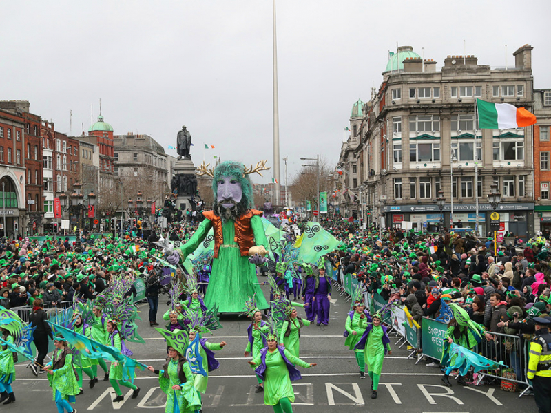
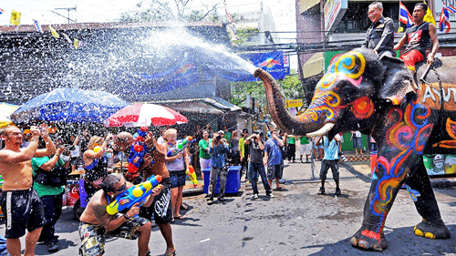

1. Lễ hội đền Hùng - Giỗ tổ vua Hùng Vương
Ngày giỗ Tổ Hùng Vương hoặc lễ hội đền Hùng hoặc Quốc giỗ là một ngày lễ của Việt Nam. Đây là ngày hội truyền thống của Người Việt tưởng nhớ công lao dựng nước của Hùng Vương. Nghi lễ truyền thống được tổ chức hàng năm vào mùng 10 tháng 3 Âm lịch tại Đền Hùng, thành phố Việt Trì, tỉnh Phú Thọ và được người dân Việt Nam trên toàn thế giới kỷ niệm. Tín ngưỡng thờ cúng Hùng Vương đã được Bộ Văn hóa, Thể thao và Du lịch Việt Nam ghi danh vào Danh mục di sản văn hóa phi vật thể quốc gia (đợt 1) và UNESCO công nhận là di sản văn hóa phi vật thể. Lễ hội diễn ra vào ngày 10 tháng 3 âm lịch, tuy nhiên, lễ hội thực chất đã diễn ra từ hàng tuần trước đó với những phong tục như đâm đuống (đánh trống đồng) của dân tộc Mường, hành hương tưởng niệm các vua Hùng, và kết thúc vào ngày 10 tháng 3 âm lịch với lễ rước kiệu và dâng hương trên đền Thượng. Lễ hội đền Hùng hiện được nhà nước Cộng hòa Xã hội chủ nghĩa Việt Nam nâng lên thành giỗ quốc Tổ, tổ chức lớn vào những năm chẵn.

Có thể nói rằng lễ hội Carnival là một trong số những lễ hội lâu đời và nổi tiếng nhất hiện nay. Đây là một lễ hội hóa trang được tổ chức lần đầu tiên vào năm 1296 tại Vinice, thủ đô của kinh đô âm nhạc thế giới. Đã từng có một khoảng thời gian dài sau đó nó bị gián đoạn trong việc tổ chức, mãi cho đến năm 1980 thì được khôi phục lại và được tổ chức đều đặn hàng năm cho đến nay. Mỗi năm sẽ có một chủ đề lễ hội khác nhau được tổ chức nhưng đều có một mục đích chung nhằm tôn vinh văn hóa và xây dựng nên bầu không khí vui vẻ, tốt đẹp dịp đầu năm. Trong suốt quãng thời gian hai tuần diễn ra lễ hội, tại quảng trường St. Mark, những rạp hát, đường phố hay các tòa nhà công sở đều trở thành sàn diễn thời trang của những "người mẫu không chuyên". Họ là những diễn viên, người làm xiếc, vũ công hay nhạc sĩ… Một không khí tươi đẹp và tràn ngập màu sắc sẽ khiến bạn có cảm giác như đang sống ở thế kỷ XVII.
2. Lễ thánh Patrick, Dublin, Ireland
Một trong những lễ hội quan trọng hàng năm của người dân Ireland là lễ hội thánh Patrick. Đây là lễ hội được tổ chức thường niên mỗi năm vào Chủ nhật gần ngày 17/ 3 nhất để tưởng nhớ Saint Patrick, vị Thánh của đất nước này. Thánh Patrick được xem là vị thánh bảo hộ của đất nước Ireland, là người đã người truyền giảng đạo Kitô cho người dân hòn đảo này với việc dùng cây cỏ 3 lá để giải thích cho thuyết "Ba ngôi một thể" của Thiên Chúa giáo: Cha, Con và đức Thánh thần.
Ngày thánh Patrick được công nhận chính thức là ngày lễ quốc gia Ireland vào khoảng thế kỷ 17, hiện nay nó đã trở thành ngày lễ tượng trưng cho nền văn hóa của người Irish. Vào ngày này, người dân thường đến làm lễ ở các nhà thờ và mặc đồ màu xanh lá cây - màu của cây shamrock (cỏ ba lá) và ăn chay. Họ sẽ nhịn ăn thịt, không uống rượu bia vào mỗi thứ sáu hàng tuần cho đến khi mùa ăn chay kết thúc.
3. Lễ hội té nước Songkran, Thái Lan
Nếu có dịp đi du lịch đến Thái Lan - xứ sở chùa Vàng vào thời điểm từ 13/4 đến 15/4 hàng năm bạn sẽ có cơ hội được tham gia vào một trong những lễ hội lâu đời và nổi tiếng nhất tại đây, lễ hội Songkran. Từ Songkran được hiểu với nghĩa là lúc thời gian chuyển dịch, mặt trời đi từ khu vực Hoàng Đạo sang khu vực Kim Ngưu trong vũ trụ. Lúc này, mọi người cùng nhau đón mừng bằng việc té nước vào người nhau để gột rửa buồn phiền đón chào năm mới.
Được tổ chức trên khắp mọi miền đất nước, tuy nhiên ở mỗi vùng miền lễ hội Songkran lại có đôi chút khác biệt. Người dân sẽ mất 2 ngày chuẩn bị để đón mừng Tết Songkran. Bắt đầu từ ngày dọn dẹp nhà cửa và rũ bỏ cái cũ. Tiếp đó là ngày để chuẩn bị đồ ăn trong những ngày lễ sắp tới. Theo tập quán, người dân sẽ tới bờ sông và dựng lên các ngôi chùa bằng cát, mỗi hạt cát sẽ cuốn đi một tội lỗi. Tới ngày đầu tiên của năm mới, người dân sẽ lên chùa cúng đồ ăn và quần áo. Còn tại nhà, các bức ảnh của Đức Phật sẽ được lau và vẩy nước thơm.
Lễ Songkran diễn ra vào khoảng tháng 4. Đặt vé máy bay đi Thái Lan vào đúng dịp lễ hội té nước, bạn sẽ được hòa vào không khí vô cùng náo nhiệt, tham gia các hoạt động thú vị đặc biệt là thỏa thích té nước vào người khác để có thể xả hết mọi muộn phiền, mệt mỏi trong cuộc sống thường nhật. Nhớ chuẩn bị súng nước để chiến đấu với các chiến hữu nhé!
Anh Nguyen
Một nhà kham pha va trai nghiem. Giúp tôi xây dựng một cộng đồng nơi trải nghiệm của mọi người có thể tạo nên sự khác biệt.